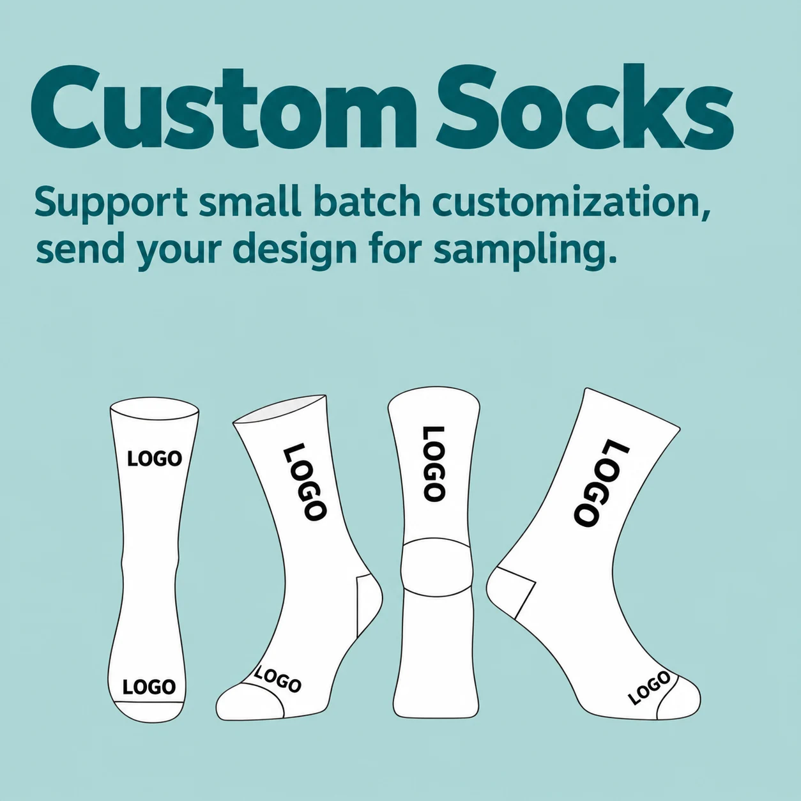

For custom socks, colour and pattern decisions are not just decorative. They shape how a logo reads, how a collection feels and how clearly the finished design holds up when the fabric stretches. A practical plan gives the factory enough direction to prepare a useful sample instead of guessing at the details.
GoodStartSocks is a factory-direct OEM and ODM custom sock manufacturer in Zhuji, Zhejiang, China. We help B2B buyers discuss artwork, materials, samples, bulk production and packaging. Our standard starting MOQ is 500 pairs.
Start with the role of the design
Before choosing individual colours, decide what the socks need to communicate. A uniform program may need quick recognition from a distance. A retail collection may prioritise a distinctive all-over pattern. A corporate gift may need a logo to remain visible with everyday footwear. This decision helps set the right balance between a clean base and decorative detail.
Solid base + logo
A focused route for logo-led socks, uniforms and minimal collections. Reserve enough contrast around the logo area.
Stripes or colour blocking
Useful for separating the cuff, heel, toe or leg into deliberate visual areas without overloading the design.
Repeat or graphic pattern
Best when icon size and spacing are planned to stay readable across the sock rather than only on a flat screen.
Use contrast, scale and spacing together
A pattern can look strong in a digital mock-up and still become difficult to read once it is knitted and worn. Contrast separates the key forms; scale stops details from disappearing; spacing prevents a repeat from becoming visually crowded. Treat the leg, foot, heel and toe as different areas of the product rather than one continuous canvas.
| Design decision | What to confirm before sampling |
|---|---|
| Background and main colours | Which colour is dominant, which colours are secondary, and where they appear on the sock. |
| Logo or focal artwork | Position, size and the contrast needed for the artwork to remain visible when worn. |
| Repeat pattern | Icon size, repeat spacing, orientation and the areas where the pattern should stop. |
| Heel, toe and cuff | Whether these areas are functional contrast points or should blend into the overall pattern. |
Give the factory a usable colour reference
Send the clearest reference you have: a brand guide, original artwork, labelled colour notes or a physical sample. Screen colours are a starting point, not a final production standard. Yarn, knit structure and the selected construction can influence the visual result, so use the sample stage to review colours in the finished sock.
Colour and pattern checklist for your quote
- Artwork or references with the main colours clearly labelled
- Which areas require the strongest contrast
- Pattern type: stripes, blocks, geometric forms or repeats
- Desired placement for logos, icons and colour changes
- Whether the socks will be reviewed primarily flat, worn or inside particular footwear
Approve the sample as a product, not only an image
Review your sample both laid flat and worn. Check the colour direction under normal light, the readability of the artwork, the stretch around the ankle and foot, and the appearance of the heel and toe. This is also the time to confirm whether the packaging supports the intended retail or gift presentation.
Sample preparation is typically about 3–7 days at GoodStartSocks. Bulk production is typically about 30 days after sample approval; final timing depends on the construction, materials, artwork, quantity, packaging and schedule. See our manufacturing guide and custom sock material guide for related planning information.
Ready to discuss your design?
Send your artwork or visual references together with your sock type, estimated quantity, size range, packaging idea, delivery destination and target date. We can discuss a practical route to sampling for your custom sock project.
Request a Custom Sock Quote →